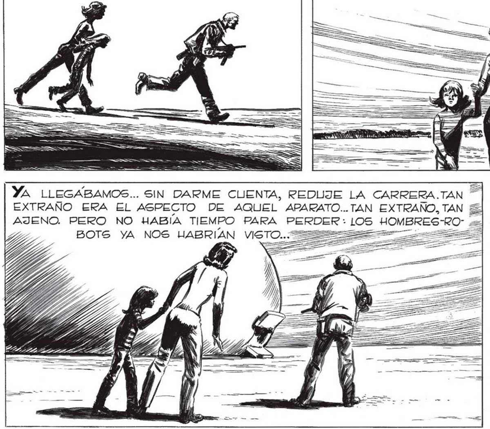
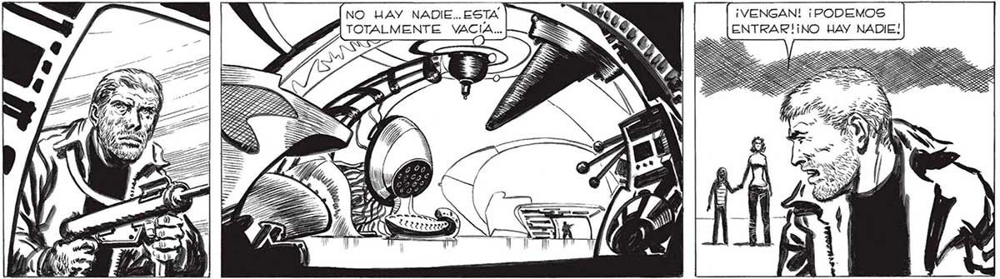

QUIZÁ PODAMOS UACERLA VOLAR,QUIZA PODAMOS RECORRER EL MUNDO... ¡EN ALGUNA PARTE TENEMOS QUE ENCONTRAR ALGÚN FOCO DE RESIGTENCIA! ¡ALGÚN LUGAR DONDE LA HUMANIDAD TODAVIA MANTENGA EL COMBATE CONTRA LOG ELLOS... El corazón EMPEZO A SALTARME DENTRO DEL PECHO... Sl, ¡AQUELLA ERA LUNA IDEA SALVADORA! LINA IDEA DIGNA DE FRANCO. O DE FAVALLI... ESPERENME AQUÍ, | VOY A EXPLORAR. YA LLEGABAMOS... SIN DARME CUENTA, REDUJE LA CARRERA.TAN * EXTRAÑO ERA EL ASPECTO DE AQUEL APARATO..TAN EXTRAÑO, TAN AJENO. PERO NO HABÍA TIEMPO PARA PERDE BOTS YA NOS UABRIAN VISTO..: Lo NO HAY NADIE... ESTA , ¡VENGAN! ¡PODEMOS TOTALMENTE VACIA... : ENTRAR!IiNO HAY NADIE! -— ¡EL PELIGRO ESTA EN QUEDARNOS FUERA, DONDE LOS HOMBRESROBOTS PUEDEN VERNOS! ¡PRONTO! ¡ADENS > A My) 14) PAI 353

